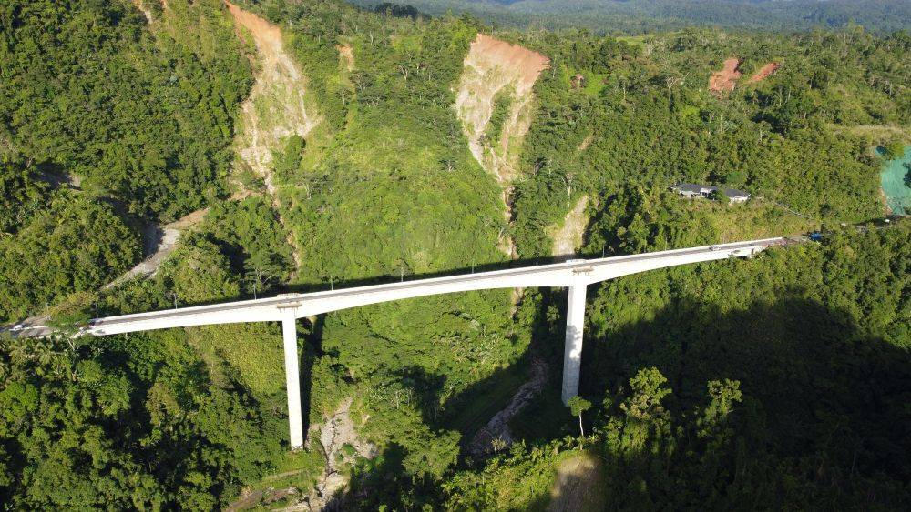

From peaceful nature parks to breathtaking viewpoints, Leyte offers a variety of scenic spots perfect for relaxation and sightseeing. Whether overlooking mountains, forests, or the sea, these locations provide visitors with a chance to slow down, take in the view, and appreciate the natural beauty that defines the province.

Leyte is home to several parks and scenic areas that highlight its diverse landscapes. One of the most notable is Agas-Agas Bridge, often called the “highest bridge in the Philippines,” where visitors can enjoy stunning views of the surrounding mountains and waterfalls. Another popular destination is Lake Danao National Park, which not only offers recreational activities but also scenic viewpoints overlooking its unique guitar-shaped lake.
These locations are perfect for casual visits, photography, and quiet moments in nature. Many parks feature open spaces, walking paths, and designated viewing areas where visitors can relax and enjoy the surroundings. Whether it’s a mountain overlook or a lakeside view, Leyte’s scenic spots provide a refreshing escape from busy urban life.

Agas-Agas Bridge offers panoramic mountain views and is a popular photo spot.
These spots are best visited during early morning or late afternoon for cooler weather and better lighting.
Many scenic areas in Leyte are ideal for photography and sightseeing.